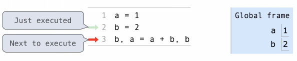
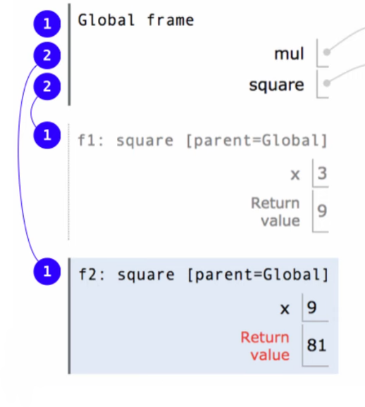

Environments
Table of Contents
1. Environments
Every expression is evaluated in the context of an environment. An environment consists of a sequence of frames, which keeps track of the names bound to values. Every expression is evaluated in the context of an environment.
A name evaluates to the value bound to that name in the earliest frame of the current environment in which that name is found. For example, if we are executing the body of some user-defined function, to look up a name we will first look for that name in the local frame of that function, and then the global frame. Therefore, names have different meanings in different environments.
Environment diagrams visualize the interpreter's process. There is code on the left with statements and expressions, with the arrows indicating evaluation order. On the right we have frames, where we keep track of names bound to values:

2. Multiple Environments
As we mentioned, an environment is a sequence of frames. Specifically, it is either:
- The global frame
- A local frame, followed by a global frame
Local frames are added to the environment when a user-defined function is called. If another user-defined function is called within that function, there is also the possibility to create yet another environment. For example, in the environment diagram below:

(1) is an environment, but so are both of the environments consisting of (1) and (2) together. Only one of these environments is the active one at any moment, and that is determined based on where the program is executing. For example, if the program is executing within the user-defined function square, then the environment is (1) and (2); otherwise, the environment is the global frame (1).